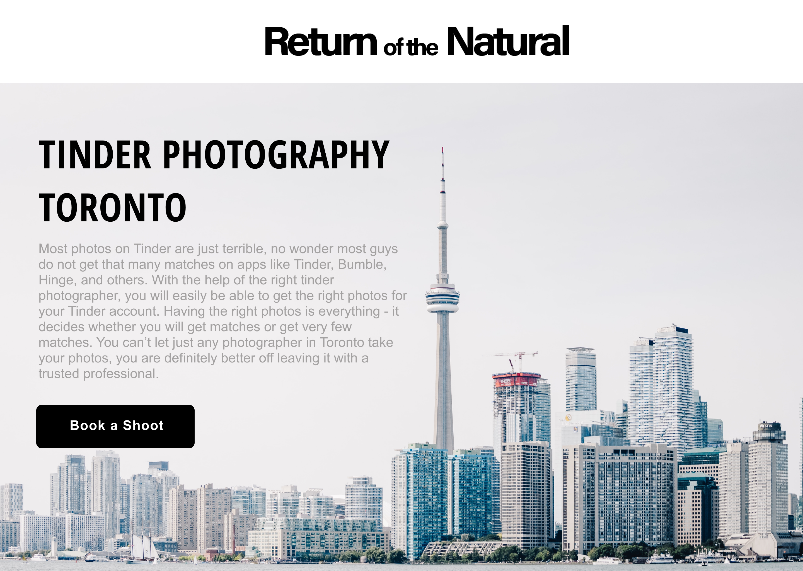

Return of the Natural

Overview
Return of the Natural is a photography based business and is a men's lifestyle website that helps guys discover the latest in products, culture and style. The homepage is mainly focused on photography for dating profiles and they also offer dating consulting.Logo
I was originally approached for a website but they did not have a logo so I offered to help create one for them as well as logos are important to a business and it is imprinted on websites. The logo they wanted they wanted very simplistic and typography focused.We had a few discussions about having the initials and also just the name of the business. I gave them multiple options for fonts for the logo before ultimately deciding on this one:
Website
For the website, I used Wordpress so that it is easily editable by the client. This was the design I came up with: